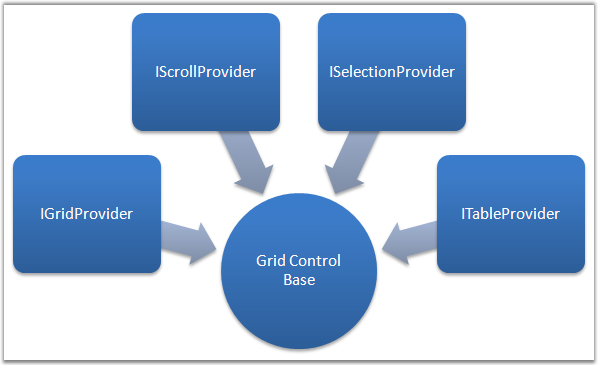
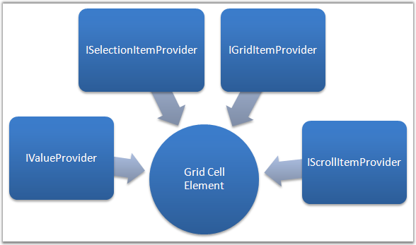
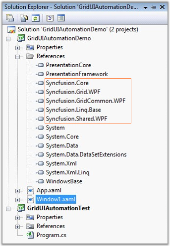
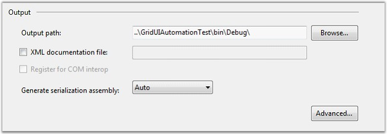

Microsoft UI Automation provides a single, generalized interface that automation clients can examine or use to operate the user interfaces of a variety of platforms and frameworks. For more information, see http://msdn.microsoft.com/en-us/library/cc165614.aspx.
With the Grid control, UI Automation is enabled for writing testable applications. It involves the patterns below.

Figure 111: Grid UI Automation Providers
Grid control is customized for maximum performance, and thus the visuals are always virtualized. Automation Elements are generated for these live visuals alone. The different sets of automation providers implemented, provide access to the inner elements.
Following are the different sets of identifiers that can be obtained for the Grid:
· GridPattern
· TablePattern
· SelectionPattern
· ScrollPattern
Each cell in the grid is considered as an Automation Element, which in itself has some providers implemented. The following figure displays the different sets of identifiers for a Grid Cell Element.

Figure 112: Grid Cell Element Automation Provider
Following are the different set of identifiers that can be obtained for each Grid Cell Element:
· GridItemPattern
· ValuePattern
· SelectionItemPattern
· ScrollItemPattern
 Note: With NUnit or any other test frameworks,
using TestApi from codeplex.com makes it quite easy to write unit tests. We are
not recommending/fixing any issues with TestApi, it is an open source library
from Microsoft.
Note: With NUnit or any other test frameworks,
using TestApi from codeplex.com makes it quite easy to write unit tests. We are
not recommending/fixing any issues with TestApi, it is an open source library
from Microsoft.
Using UI Automation Patterns
Let us walkthrough the following sample application that demonstrates the usage of UI Automation using a Console application.
API Usage
Setting up an Automation Sample is very useful to understand the usage of API for Automation Peer in Grid control. Automation Elements are run on a different thread from the main GUI thread.
The following set of instructions illustrates the same.
1. Create a WPF sample application with references added up for Syncfusion assemblies.

Figure 113: Syncfusion Assemblies referenced in the WPF Application
2. Create a console project as shown below.
|
[XAML]
<Grid> <ScrollViewer CanContentScroll="True" HorizontalScrollBarVisibility="Auto" VerticalScrollBarVisibility="Auto"> <syncfusion:GridControl x:Name="grid" /> </ScrollViewer> </Grid> |
|
[C#]
private void InitGrid() { var model = this.grid.Model; model.RowCount = 10; model.ColumnCount = 10; model.QueryCellInfo += (s, e) => { e.Style.CellValue = string.Format("Cell {0} / {1}", e.Cell.RowIndex, e.Cell.ColumnIndex); }; } |
3. Enter the path where the output of the Window sample has to be saved, in the Output path field.

Figure 114: Specifying the Output Path
Note: Mention the output path as the Console
application's bin\Debug directory.
The following sample code uses TestApi assemblies.
|
[C#]
// Initialization Code. private static AutomationElement GetGridAut(out AutomatedApplication app) { string sampleAppPath = "GridUIAutomationDemo.exe"; app = new OutOfProcessApplication(new OutOfProcessApplicationSettings { ProcessStartInfo = new ProcessStartInfo(sampleAppPath), ApplicationImplementationFactory = new UIAutomationOutOfProcessApplicationFactory() }); app.Start(); app.WaitForMainWindow(TimeSpan.FromSeconds(15)); var rootElement = app.MainWindow as AutomationElement; var grid = rootElement.AsQueryable(TreeScope.Descendants).First(o => o.ClassName == "GridControl" && o.ControlType == ControlType.DataGrid); return grid; } |
Note: We have added minimal set of Linq-to-UIAutomation classes that would translate the LINQ query for searching the AutomationElement from the root hierarchy. With Linq-To-UIAutomation library, only First method is supported now.
The Grid Automation element is obtained.
Obtaining the Automation Pattern
Once you get the actual Grid's Automation Element, you can then make use of different Patterns supported by the control. The following code example illustrates the same.
|
[C#]
var gridPattern = grid.GetCurrentPattern(GridPatternIdentifiers.Pattern) as GridPattern; var item = gridPattern.GetItem(1, 1); if (item != null) { object value = null; item.TryGetCurrentPattern(ValuePatternIdentifiers.Pattern, out value); var valueProvider = value as ValuePattern; var cellValue = valueProvider.Current.Value; Console.WriteLine("Item at [1,1] - {0}", cellValue); } |